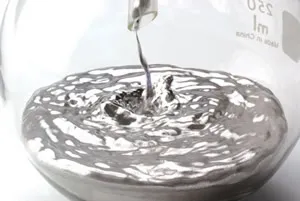
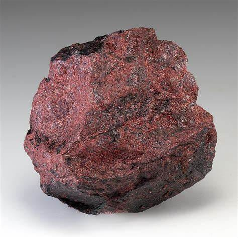
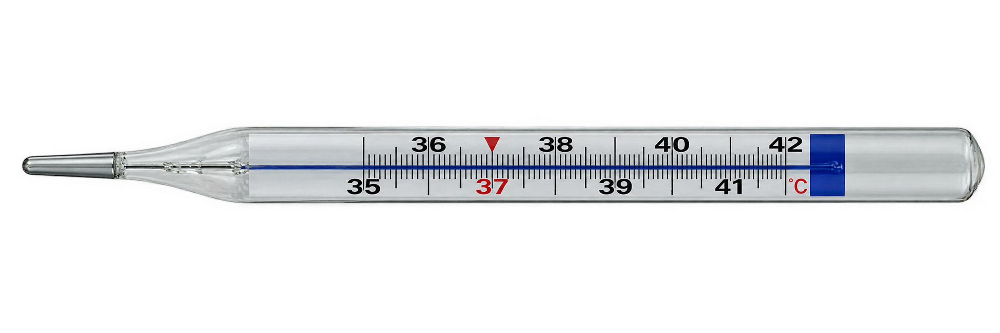

Antiguidade
O mercúrio é conhecido e utilizado pela humanidade desde a Antiguidade (há registros de uso já por volta de 1500 a.C.), não havendo um único "descobridor" documentado, como ocorre com muitos elementos conhecidos desde tempos antigos.
Elemento químico da Tabela Periódica - Símbolo Hg
Nome e símbolo: Mercúrio (Hg)
Número atômico / massa atômica: 80 / aproximadamente 200,59 u
Estado físico à temperatura ambiente: é o único metal que se encontra no estado líquido em condições normais de temperatura (25 °C) e pressão.
Aparência ou coloração: metal prateado, brilhante, semelhante à "prata líquida" (seu símbolo Hg vem do grego hydrargyrum, que significa exatamente isso).

O mercúrio é conhecido e utilizado pela humanidade desde a Antiguidade (há registros de uso já por volta de 1500 a.C.), não havendo um único "descobridor" documentado, como ocorre com muitos elementos conhecidos desde tempos antigos.
Era conhecido e usado na Grécia Antiga, seu nome remete ao deus romano Mercúrio, associado à velocidade, numa referência à mobilidade do metal líquido.
Alquimistas o utilizavam em experimentos e na mineração, empregando-o para extrair ouro e prata do minério por meio da amalgamação.
O elemento é obtido principalmente a partir do aquecimento do mineral cinábrio (sulfeto de mercúrio, HgS), processo já praticado desde a Antiguidade e aperfeiçoado ao longo dos séculos.

Na natureza, o mercúrio não é encontrado livre (em sua forma metálica pura) em quantidades economicamente relevantes: ele ocorre combinado com outros elementos, principalmente na forma do mineral cinábrio (HgS).
Apesar de estar presente em cerca de 25 minerais diferentes, sua extração só é economicamente viável a partir do cinábrio, encontrado em regiões onde ocorreu atividade vulcânica.
Os principais depósitos mundiais estão localizados na Espanha, no Quirguistão, na Argélia, na China, nos Estados Unidos e no México.
O Brasil não possui jazidas de cinábrio: todo o mercúrio utilizado no país é importado. O elemento também é liberado naturalmente na atmosfera pelo desgaste da crosta terrestre e por erupções vulcânicas.

O vapor de mercúrio dentro do tubo, ao receber corrente elétrica, emite radiação ultravioleta que faz o revestimento interno de fósforo brilhar, produzindo luz visível.
O mercúrio é misturado com prata, cobre e estanho para formar uma liga (amálgama) usada em restaurações dentárias, pois endurece rapidamente após a mistura.
Por muito tempo foi usado em termômetros, barômetros e esfigmomanômetros, já que se expande de forma regular e previsível com a temperatura ou pressão (hoje, seu uso nesses aparelhos vem sendo proibido no Brasil por causa da toxicidade).
Células eletrolíticas de mercúrio são utilizadas na fabricação de cloro gasoso (Cl₂) e hidróxido de sódio (soda cáustica), embora esse processo esteja sendo substituído por tecnologias mais seguras.
O mercúrio é usado para formar amálgama com partículas finas de ouro, que depois é aquecido para separar o metal precioso — prática que libera grandes quantidades de mercúrio no ambiente.
O mercúrio e seus compostos são extremamente tóxicos e bioacumulativos ao longo da cadeia alimentar. Seus compostos orgânicos (como o metilmercúrio) são neurotóxicos, podem atravessar a barreira placentária e causar danos aos pulmões, rins, fígado e coração.
Hoje o mercúrio é um contaminante presente em solo, água e ar em todo o mundo. O caso mais conhecido de intoxicação em massa ocorreu na baía de Minamata, no Japão, a partir de 1956, quando uma indústria despejou resíduos com mercúrio na água; mais de 13.800 pessoas foram oficialmente reconhecidas como contaminadas pelo governo japonês.
Apesar dos riscos, o mercúrio ainda tem uso industrial relevante (produção de cloro e soda cáustica, mineração de ouro), mas seu emprego vem sendo reduzido globalmente por acordos internacionais.
Seu manuseio exige evitar a inalação de vapores e o contato direto; o descarte deve seguir normas ambientais específicas. No Brasil, o Ibama controla a importação, a exportação e o uso do mercúrio metálico, e a Anvisa proibiu, a partir de 2019, a fabricação e o uso de termômetros e aparelhos de pressão com mercúrio em serviços de saúde.
Em 2013 foi assinada a Convenção de Minamata sobre o Mercúrio, tratado internacional que busca reduzir e eliminar progressivamente o uso do metal no mundo; o Brasil é signatário do acordo desde 2018 (Decreto nº 9.470/2018).